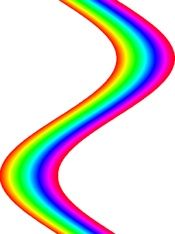

Accessing SkiaSharp bitmap pixel bits
As you saw in the article Saving SkiaSharp bitmaps to files, bitmaps are generally stored in files in a compressed format, such as JPEG or PNG. In constrast, a SkiaSharp bitmap stored in memory is not compressed. It is stored as a sequential series of pixels. This uncompressed format facilitates the transfer of bitmaps to a display surface.
The memory block occupied by a SkiaSharp bitmap is organized in a very straightforward manner: It begins with the first row of pixels, from left to right, and then continues with the second row. For full-color bitmaps, each pixel consists of four bytes, which means that the total memory space required by the bitmap is four times the product of its width and height.
This article describes how an application can get access to those pixels, either directly by accessing the bitmap's pixel memory block, or indirectly. In some instances, a program might want to analyze the pixels of an image and construct a histogram of some sort. More commonly, applications can construct unique images by algorithmically creating the pixels that make up the bitmap:

The techniques
SkiaSharp provides several techniques for accessing a bitmap's pixel bits. Which one you choose is usually a compromise between coding convenience (which is related to maintenance and ease of debugging) and performance. In most cases, you'll use one of the following methods and properties of SKBitmap for accessing the bitmap's pixels:
- The
GetPixelandSetPixelmethods allow you to obtain or set the color of a single pixel. - The
Pixelsproperty obtains an array of pixel colors for the entire bitmap, or sets the array of colors. GetPixelsreturns the address of the pixel memory used by the bitmap.SetPixelsreplaces the address of the pixel memory used by the bitmap.
You can think of the first two techniques as "high level" and the second two as "low level." There are some other methods and properties that you can use, but these are the most valuable.
To allow you to see the performance differences between these techniques, the sample application contains a page named Gradient Bitmap that creates a bitmap with pixels that combine red and blue shades to create a gradient. The program creates eight different copies of this bitmap, all using different techniques for setting the bitmap pixels. Each of these eight bitmaps is created in a separate method that also sets a brief text description of the technique and calculates the time required to set all the pixels. Each method loops through the pixel-setting logic 100 times to get a better estimate of the performance.
The SetPixel method
If you only need to set or get several individual pixels, the SetPixel and GetPixel methods are ideal. For each of these two methods, you specify the integer column and row. Regardless of the pixel format, these two methods let you obtain or set the pixel as an SKColor value:
bitmap.SetPixel(col, row, color);
SKColor color = bitmap.GetPixel(col, row);
The col argument must range from 0 to one less than the Width property of the bitmap, and row ranges from 0 to one less than the Height property.
Here's the method in Gradient Bitmap that sets the contents of a bitmap using the SetPixel method. The bitmap is 256 by 256 pixels, and the for loops are hard-coded with the range of values:
public class GradientBitmapPage : ContentPage
{
const int REPS = 100;
Stopwatch stopwatch = new Stopwatch();
···
SKBitmap FillBitmapSetPixel(out string description, out int milliseconds)
{
description = "SetPixel";
SKBitmap bitmap = new SKBitmap(256, 256);
stopwatch.Restart();
for (int rep = 0; rep < REPS; rep++)
for (int row = 0; row < 256; row++)
for (int col = 0; col < 256; col++)
{
bitmap.SetPixel(col, row, new SKColor((byte)col, 0, (byte)row));
}
milliseconds = (int)stopwatch.ElapsedMilliseconds;
return bitmap;
}
···
}
The color set for each pixel has a red component equal to the bitmap column, and a blue component equal to the row. The resultant bitmap is black at the upper-left, red at the upper-right, blue at the lower-left, and magenta at the lower-right, with gradients elsewhere.
The SetPixel method is called 65,536 times, and regardless how efficient this method might be, it's generally not a good idea to make that many API calls if an alternative is available. Fortunately, there are several alternatives.
The Pixels property
SKBitmap defines a Pixels property that returns an array of SKColor values for the entire bitmap. You can also use Pixels to set an array of color values for the bitmap:
SKColor[] pixels = bitmap.Pixels;
bitmap.Pixels = pixels;
The pixels are arranged in the array starting with the first row, from left to right, then the second row, and so forth. The total number of colors in the array is equal to the product of the bitmap width and height.
Although this property appears to be efficient, keep in mind that the pixels are being copied from the bitmap into the array, and from the array back into the bitmap, and the pixels are converted from and to SKColor values.
Here's the method in the GradientBitmapPage class that sets the bitmap using the Pixels property. The method allocates an SKColor array of the required size, but it could have used the Pixels property to create that array:
SKBitmap FillBitmapPixelsProp(out string description, out int milliseconds)
{
description = "Pixels property";
SKBitmap bitmap = new SKBitmap(256, 256);
stopwatch.Restart();
SKColor[] pixels = new SKColor[256 * 256];
for (int rep = 0; rep < REPS; rep++)
for (int row = 0; row < 256; row++)
for (int col = 0; col < 256; col++)
{
pixels[256 * row + col] = new SKColor((byte)col, 0, (byte)row);
}
bitmap.Pixels = pixels;
milliseconds = (int)stopwatch.ElapsedMilliseconds;
return bitmap;
}
Notice that the index of the pixels array needs to be calculated from the row and col variables. The row is multiplied by the number of pixels in each row (256 in this case), and then the column is added.
SKBitmap also defines a similar Bytes property, which returns a byte array for the entire bitmap, but it is more cumbersome for full-color bitmaps.
The GetPixels pointer
Potentially the most powerful technique to access the bitmap pixels is GetPixels, not to be confused with the GetPixel method or the Pixels property. You'll immediately notice a difference with GetPixels in that it returns something not very common in C# programming:
IntPtr pixelsAddr = bitmap.GetPixels();
The .NET IntPtr type represents a pointer. It is called IntPtr because it is the length of an integer on the native processor of the machine on which the program is run, generally either 32 bits or 64 bits in length. The IntPtr that GetPixels returns is the address of the actual block of memory that the bitmap object is using to store its pixels.
You can convert the IntPtr into a C# pointer type using the ToPointer method. The C# pointer syntax is the same as C and C++:
byte* ptr = (byte*)pixelsAddr.ToPointer();
The ptr variable is of type byte pointer. This ptr variable allows you to access the individual bytes of memory that are used to store the bitmap's pixels. You use code like this to read a byte from this memory or write a byte to the memory:
byte pixelComponent = *ptr;
*ptr = pixelComponent;
In this context, the asterisk is the C# indirection operator and is used to reference the contents of the memory pointed to by ptr. Initially, ptr points to the first byte of the first pixel of the first row of the bitmap, but you can perform arithmetic on the ptr variable to move it to other locations within the bitmap.
One drawback is that you can use this ptr variable only in a code block marked with the unsafe keyword. In addition, the assembly must be flagged as allowing unsafe blocks. This is done in the project's properties.
Using pointers in C# is very powerful, but also very dangerous. You need to be careful that you don't access memory beyond what the pointer is supposed to reference. This is why pointer use is associated with the word "unsafe."
Here's the method in the GradientBitmapPage class that uses the GetPixels method. Notice the unsafe block that encompasses all the code using the byte pointer:
SKBitmap FillBitmapBytePtr(out string description, out int milliseconds)
{
description = "GetPixels byte ptr";
SKBitmap bitmap = new SKBitmap(256, 256);
stopwatch.Restart();
IntPtr pixelsAddr = bitmap.GetPixels();
unsafe
{
for (int rep = 0; rep < REPS; rep++)
{
byte* ptr = (byte*)pixelsAddr.ToPointer();
for (int row = 0; row < 256; row++)
for (int col = 0; col < 256; col++)
{
*ptr++ = (byte)(col); // red
*ptr++ = 0; // green
*ptr++ = (byte)(row); // blue
*ptr++ = 0xFF; // alpha
}
}
}
milliseconds = (int)stopwatch.ElapsedMilliseconds;
return bitmap;
}
When the ptr variable is first obtained from the ToPointer method, it points to the first byte of the leftmost pixel of the first row of the bitmap. The for loops for row and col are set up so that ptr can be incremented with the ++ operator after each byte of each pixel is set. For the other 99 loops through the pixels, the ptr must be set back to the beginning of the bitmap.
Each pixel is four bytes of memory, so each byte has to be set separately. The code here assumes that the bytes are in the order red, green, blue, and alpha, which is consistent with the SKColorType.Rgba8888 color type. You might recall that this is the default color type for iOS and Android, but not for the Universal Windows Platform. By default, the UWP creates bitmaps with the SKColorType.Bgra8888 color type. For this reason, expect to see some different results on that platform!
It's possible to cast the value returned from ToPointer to a uint pointer rather than a byte pointer. This allows an entire pixel to be accessed in one statement. Applying the ++ operator to that pointer increments it by four bytes to point to the next pixel:
public class GradientBitmapPage : ContentPage
{
···
SKBitmap FillBitmapUintPtr(out string description, out int milliseconds)
{
description = "GetPixels uint ptr";
SKBitmap bitmap = new SKBitmap(256, 256);
stopwatch.Restart();
IntPtr pixelsAddr = bitmap.GetPixels();
unsafe
{
for (int rep = 0; rep < REPS; rep++)
{
uint* ptr = (uint*)pixelsAddr.ToPointer();
for (int row = 0; row < 256; row++)
for (int col = 0; col < 256; col++)
{
*ptr++ = MakePixel((byte)col, 0, (byte)row, 0xFF);
}
}
}
milliseconds = (int)stopwatch.ElapsedMilliseconds;
return bitmap;
}
···
[MethodImpl(MethodImplOptions.AggressiveInlining)]
uint MakePixel(byte red, byte green, byte blue, byte alpha) =>
(uint)((alpha << 24) | (blue << 16) | (green << 8) | red);
···
}
The pixel is set using the MakePixel method, which constructs an integer pixel from red, green, blue, and alpha components. Keep in mind that the SKColorType.Rgba8888 format has a pixel byte ordering like this:
RR GG BB AA
But the integer corresponding to those bytes is:
AABBGGRR
The least significant byte of the integer is stored first in accordance with little-endian architecture. This MakePixel method will not work correctly for bitmaps with the Bgra8888 color type.
The MakePixel method is flagged with the MethodImplOptions.AggressiveInlining option to encourage the compiler to avoid making this a separate method, but instead to compile the code where the method is called. This should improve performance.
Interestingly, the SKColor structure defines an explicit conversion from SKColor to an unsigned integer, which means that an SKColor value can be created, and a conversion to uint can be used instead of MakePixel:
SKBitmap FillBitmapUintPtrColor(out string description, out int milliseconds)
{
description = "GetPixels SKColor";
SKBitmap bitmap = new SKBitmap(256, 256);
stopwatch.Restart();
IntPtr pixelsAddr = bitmap.GetPixels();
unsafe
{
for (int rep = 0; rep < REPS; rep++)
{
uint* ptr = (uint*)pixelsAddr.ToPointer();
for (int row = 0; row < 256; row++)
for (int col = 0; col < 256; col++)
{
*ptr++ = (uint)new SKColor((byte)col, 0, (byte)row);
}
}
}
milliseconds = (int)stopwatch.ElapsedMilliseconds;
return bitmap;
}
The only question is this: Is the integer format of the SKColor value in the order of the SKColorType.Rgba8888 color type, or the SKColorType.Bgra8888 color type, or is it something else entirely? The answer to that question shall be revealed shortly.
The SetPixels Method
SKBitmap also defines a method named SetPixels, which you call like this:
bitmap.SetPixels(intPtr);
Recall that GetPixels obtains an IntPtr referencing the memory block used by the bitmap to store its pixels. The SetPixels call replaces that memory block with the memory block referenced by the IntPtr specified as the SetPixels argument. The bitmap then frees up the memory block it was using previously. The next time GetPixels is called, it obtains the memory block set with SetPixels.
At first, it seems as if SetPixels gives you no more power and performance than GetPixels while being less convenient. With GetPixels you obtain the bitmap memory block and access it. With SetPixels you allocate and access some memory, and then set that as the bitmap memory block.
But using SetPixels offers a distinct syntactic advantage: It allows you to access the bitmap pixel bits using an array. Here's the method in GradientBitmapPage that demonstrates this technique. The method first defines a multi-dimensional byte array corresponding to the bytes of the bitmap's pixels. The first dimension is the row, the second dimension is the column, and the third dimension corresonds to the four components of each pixel:
SKBitmap FillBitmapByteBuffer(out string description, out int milliseconds)
{
description = "SetPixels byte buffer";
SKBitmap bitmap = new SKBitmap(256, 256);
stopwatch.Restart();
byte[,,] buffer = new byte[256, 256, 4];
for (int rep = 0; rep < REPS; rep++)
for (int row = 0; row < 256; row++)
for (int col = 0; col < 256; col++)
{
buffer[row, col, 0] = (byte)col; // red
buffer[row, col, 1] = 0; // green
buffer[row, col, 2] = (byte)row; // blue
buffer[row, col, 3] = 0xFF; // alpha
}
unsafe
{
fixed (byte* ptr = buffer)
{
bitmap.SetPixels((IntPtr)ptr);
}
}
milliseconds = (int)stopwatch.ElapsedMilliseconds;
return bitmap;
}
Then, after the array has been filled with pixels, an unsafe block and a fixed statement is used to obtain a byte pointer that points to this array. That byte pointer can then be cast to an IntPtr to pass to SetPixels.
The array that you create doesn't have to be a byte array. It can be an integer array with only two dimensions for the row and column:
SKBitmap FillBitmapUintBuffer(out string description, out int milliseconds)
{
description = "SetPixels uint buffer";
SKBitmap bitmap = new SKBitmap(256, 256);
stopwatch.Restart();
uint[,] buffer = new uint[256, 256];
for (int rep = 0; rep < REPS; rep++)
for (int row = 0; row < 256; row++)
for (int col = 0; col < 256; col++)
{
buffer[row, col] = MakePixel((byte)col, 0, (byte)row, 0xFF);
}
unsafe
{
fixed (uint* ptr = buffer)
{
bitmap.SetPixels((IntPtr)ptr);
}
}
milliseconds = (int)stopwatch.ElapsedMilliseconds;
return bitmap;
}
The MakePixel method is again used to combine the color components into a 32-bit pixel.
Just for completeness, here's the same code but with an SKColor value cast to an unsigned integer:
SKBitmap FillBitmapUintBufferColor(out string description, out int milliseconds)
{
description = "SetPixels SKColor";
SKBitmap bitmap = new SKBitmap(256, 256);
stopwatch.Restart();
uint[,] buffer = new uint[256, 256];
for (int rep = 0; rep < REPS; rep++)
for (int row = 0; row < 256; row++)
for (int col = 0; col < 256; col++)
{
buffer[row, col] = (uint)new SKColor((byte)col, 0, (byte)row);
}
unsafe
{
fixed (uint* ptr = buffer)
{
bitmap.SetPixels((IntPtr)ptr);
}
}
milliseconds = (int)stopwatch.ElapsedMilliseconds;
return bitmap;
}
Comparing the techniques
The constructor of the Gradient Color page calls all eight of the methods shown above, and saves the results:
public class GradientBitmapPage : ContentPage
{
···
string[] descriptions = new string[8];
SKBitmap[] bitmaps = new SKBitmap[8];
int[] elapsedTimes = new int[8];
SKCanvasView canvasView;
public GradientBitmapPage ()
{
Title = "Gradient Bitmap";
bitmaps[0] = FillBitmapSetPixel(out descriptions[0], out elapsedTimes[0]);
bitmaps[1] = FillBitmapPixelsProp(out descriptions[1], out elapsedTimes[1]);
bitmaps[2] = FillBitmapBytePtr(out descriptions[2], out elapsedTimes[2]);
bitmaps[4] = FillBitmapUintPtr(out descriptions[4], out elapsedTimes[4]);
bitmaps[6] = FillBitmapUintPtrColor(out descriptions[6], out elapsedTimes[6]);
bitmaps[3] = FillBitmapByteBuffer(out descriptions[3], out elapsedTimes[3]);
bitmaps[5] = FillBitmapUintBuffer(out descriptions[5], out elapsedTimes[5]);
bitmaps[7] = FillBitmapUintBufferColor(out descriptions[7], out elapsedTimes[7]);
canvasView = new SKCanvasView();
canvasView.PaintSurface += OnCanvasViewPaintSurface;
Content = canvasView;
}
···
}
The constructor concludes by creating an SKCanvasView to display the resultant bitmaps. The PaintSurface handler divides its surface into eight rectangles and calls Display to display each one:
public class GradientBitmapPage : ContentPage
{
···
void OnCanvasViewPaintSurface(object sender, SKPaintSurfaceEventArgs args)
{
SKImageInfo info = args.Info;
SKSurface surface = args.Surface;
SKCanvas canvas = surface.Canvas;
int width = info.Width;
int height = info.Height;
canvas.Clear();
Display(canvas, 0, new SKRect(0, 0, width / 2, height / 4));
Display(canvas, 1, new SKRect(width / 2, 0, width, height / 4));
Display(canvas, 2, new SKRect(0, height / 4, width / 2, 2 * height / 4));
Display(canvas, 3, new SKRect(width / 2, height / 4, width, 2 * height / 4));
Display(canvas, 4, new SKRect(0, 2 * height / 4, width / 2, 3 * height / 4));
Display(canvas, 5, new SKRect(width / 2, 2 * height / 4, width, 3 * height / 4));
Display(canvas, 6, new SKRect(0, 3 * height / 4, width / 2, height));
Display(canvas, 7, new SKRect(width / 2, 3 * height / 4, width, height));
}
void Display(SKCanvas canvas, int index, SKRect rect)
{
string text = String.Format("{0}: {1:F1} msec", descriptions[index],
(double)elapsedTimes[index] / REPS);
SKRect bounds = new SKRect();
using (SKPaint textPaint = new SKPaint())
{
textPaint.TextSize = (float)(12 * canvasView.CanvasSize.Width / canvasView.Width);
textPaint.TextAlign = SKTextAlign.Center;
textPaint.MeasureText("Tly", ref bounds);
canvas.DrawText(text, new SKPoint(rect.MidX, rect.Bottom - bounds.Bottom), textPaint);
rect.Bottom -= bounds.Height;
canvas.DrawBitmap(bitmaps[index], rect, BitmapStretch.Uniform);
}
}
}
To allow the compiler to optimize the code, this page was run in Release mode. Here's that page running on an iPhone 8 simulator on a MacBook Pro, a Nexus 5 Android phone, and Surface Pro 3 running Windows 10. Because of the hardware differences, avoid comparing the performance times between the devices, but instead look at the relative times on each device:

Here is a table that consolidates the execution times in milliseconds:
| API | Data type | iOS | Android | UWP |
|---|---|---|---|---|
| SetPixel | 3.17 | 10.77 | 3.49 | |
| Pixels | 0.32 | 1.23 | 0.07 | |
| GetPixels | byte | 0.09 | 0.24 | 0.10 |
| uint | 0.06 | 0.26 | 0.05 | |
| SKColor | 0.29 | 0.99 | 0.07 | |
| SetPixels | byte | 1.33 | 6.78 | 0.11 |
| uint | 0.14 | 0.69 | 0.06 | |
| SKColor | 0.35 | 1.93 | 0.10 |
As expected, calling SetPixel 65,536 times is the least effeicient way to set a bitmap's pixels. Filling an SKColor array and setting the Pixels property is much better, and even compares favorably with some of the GetPixels and SetPixels techniques. Working with uint pixel values is generally faster than setting separate byte components, and converting the SKColor value to an unsigned integer adds some overhead to the process.
It's also interesting to compare the various gradients: The top rows of each platform are the same, and show the gradient as it was intended. This means that the SetPixel method and the Pixels property correctly create pixels from colors regardless of the underlying pixel format.
The next two rows of the iOS and Android screenshots are also the same, which confirms that the little MakePixel method is correctly defined for the default Rgba8888 pixel format for these platforms.
The bottom row of the iOS and Android screenshots is backwards, which indicates that the unsigned integer obtained by casting an SKColor value is in the form:
AARRGGBB
The bytes are in the order:
BB GG RR AA
This is the Bgra8888 ordering rather than the Rgba8888 ordering. The Brga8888 format is the default for the Universal Windows platform, which is why the gradients on the last row of that screenshot are the same as the first row. But the middle two rows are incorrect because the code creating those bitmaps assumed an Rgba8888 ordering.
If you want to use the same code for accessing pixel bits on each platform, you can explicitly create an SKBitmap using either the Rgba8888 or Bgra8888 format. If you want to cast SKColor values to bitmap pixels, use Bgra8888.
Random access of pixels
The FillBitmapBytePtr and FillBitmapUintPtr methods in the Gradient Bitmap page benefited from for loops designed to fill the bitmap sequentially, from top row to bottom row, and in each row from left to right. The pixel could be set with the same statement that incremented the pointer.
Sometimes it's necessary to access the pixels randomly rather than sequentially. If you're using the GetPixels approach, you'll need to calculate pointers based on the row and column. This is demonstrated in the Rainbow Sine page, which creates a bitmap showing a rainbow in the form of one cycle of a sine curve.
The colors of the rainbow are easiest to create using the HSL (hue, saturation, luminosity) color model. The SKColor.FromHsl method creates an SKColor value using hue values that range from 0 to 360 (like the angles of a circle but going from red, through green and blue, and back to red), and saturation and luminosity values ranging from 0 to 100. For the colors of a rainbow, the saturation should be set to a maximum of 100, and the luminosity to a midpoint of 50.
Rainbow Sine creates this image by looping through the rows of the bitmap, and then looping through 360 hue values. From each hue value, it calculates a bitmap column that is also based on a sine value:
public class RainbowSinePage : ContentPage
{
SKBitmap bitmap;
public RainbowSinePage()
{
Title = "Rainbow Sine";
bitmap = new SKBitmap(360 * 3, 1024, SKColorType.Bgra8888, SKAlphaType.Unpremul);
unsafe
{
// Pointer to first pixel of bitmap
uint* basePtr = (uint*)bitmap.GetPixels().ToPointer();
// Loop through the rows
for (int row = 0; row < bitmap.Height; row++)
{
// Calculate the sine curve angle and the sine value
double angle = 2 * Math.PI * row / bitmap.Height;
double sine = Math.Sin(angle);
// Loop through the hues
for (int hue = 0; hue < 360; hue++)
{
// Calculate the column
int col = (int)(360 + 360 * sine + hue);
// Calculate the address
uint* ptr = basePtr + bitmap.Width * row + col;
// Store the color value
*ptr = (uint)SKColor.FromHsl(hue, 100, 50);
}
}
}
// Create the SKCanvasView
SKCanvasView canvasView = new SKCanvasView();
canvasView.PaintSurface += OnCanvasViewPaintSurface;
Content = canvasView;
}
void OnCanvasViewPaintSurface(object sender, SKPaintSurfaceEventArgs args)
{
SKImageInfo info = args.Info;
SKSurface surface = args.Surface;
SKCanvas canvas = surface.Canvas;
canvas.Clear();
canvas.DrawBitmap(bitmap, info.Rect);
}
}
Notice that the constructor creates the bitmap based on the SKColorType.Bgra8888 format:
bitmap = new SKBitmap(360 * 3, 1024, SKColorType.Bgra8888, SKAlphaType.Unpremul);
This allows the program to use the conversion of SKColor values into uint pixels without worry. Although it doesn't play a role in this particular program, whenever you use the SKColor conversion to set pixels, you should also specify SKAlphaType.Unpremul because SKColor doesn't premultiply its color components by the alpha value.
The constructor then uses the GetPixels method to obtain a pointer to the first pixel of the bitmap:
uint* basePtr = (uint*)bitmap.GetPixels().ToPointer();
For any particular row and column, an offset value must be added to basePtr. This offset is the row times the bitmap width, plus the column:
uint* ptr = basePtr + bitmap.Width * row + col;
The SKColor value is stored in memory using this pointer:
*ptr = (uint)SKColor.FromHsl(hue, 100, 50);
In the PaintSurface handler of the SKCanvasView, the bitmap is stretched to fill the display area:
{kind=link}
From one bitmap to another
Very many image-processing tasks involve modifying pixels as they are transferred from one bitmap to another. This technique is demonstrated in the Color Adjustment page. The page loads one of the bitmap resources and then allows you to modify the image using three Slider views:
{kind=link}
For each pixel color, the first Slider adds a value from 0 to 360 to the hue, but then uses the modulo operator to keep the result between 0 and 360, effectively shifting the colors along the spectrum (as the UWP screenshot demonstrates). The second Slider lets you select a multiplicative factor between 0.5 and 2 to apply to the saturation, and the third Slider does the same for the luminosity, as demonstrated in the Android screenshot.
The program maintains two bitmaps, the original source bitmap named srcBitmap and the adjusted destination bitmap named dstBitmap. Each time a Slider is moved, the program calculates all new pixels in dstBitmap. Of course, users will experiment by moving the Slider views very quickly, so you want the best performance you can manage. This involves the GetPixels method for both the source and destination bitmaps.
The Color Adjustment page doesn't control the color format of the source and destination bitmaps. Instead, it contains slightly different logic for SKColorType.Rgba8888 and SKColorType.Bgra8888 formats. The source and destination can be different formats, and the program will still work.
Here's the program except for the crucial TransferPixels method that transfers the pixels form the source to the destination. The constructor sets dstBitmap equal to srcBitmap. The PaintSurface handler displays dstBitmap:
public partial class ColorAdjustmentPage : ContentPage
{
SKBitmap srcBitmap =
BitmapExtensions.LoadBitmapResource(typeof(FillRectanglePage),
"SkiaSharpFormsDemos.Media.Banana.jpg");
SKBitmap dstBitmap;
public ColorAdjustmentPage()
{
InitializeComponent();
dstBitmap = new SKBitmap(srcBitmap.Width, srcBitmap.Height);
OnSliderValueChanged(null, null);
}
void OnSliderValueChanged(object sender, ValueChangedEventArgs args)
{
float hueAdjust = (float)hueSlider.Value;
hueLabel.Text = $"Hue Adjustment: {hueAdjust:F0}";
float saturationAdjust = (float)Math.Pow(2, saturationSlider.Value);
saturationLabel.Text = $"Saturation Adjustment: {saturationAdjust:F2}";
float luminosityAdjust = (float)Math.Pow(2, luminositySlider.Value);
luminosityLabel.Text = $"Luminosity Adjustment: {luminosityAdjust:F2}";
TransferPixels(hueAdjust, saturationAdjust, luminosityAdjust);
canvasView.InvalidateSurface();
}
···
void OnCanvasViewPaintSurface(object sender, SKPaintSurfaceEventArgs args)
{
SKImageInfo info = args.Info;
SKSurface surface = args.Surface;
SKCanvas canvas = surface.Canvas;
canvas.Clear();
canvas.DrawBitmap(dstBitmap, info.Rect, BitmapStretch.Uniform);
}
}
The ValueChanged handler for the Slider views calculates the adjustment values and calls TransferPixels.
The entire TransferPixels method is marked as unsafe. It begins by obtaining byte pointers to the pixel bits of both bitmaps, and then loops through all the rows and columns. From the source bitmap, the method obtains four bytes for each pixel. These could be in either the Rgba8888 or Bgra8888 order. Checking for the color type allows an SKColor value to be created. The HSL components are then extracted, adjusted, and used to recreate the SKColor value. Depending on whether the destination bitmap is Rgba8888 or Bgra8888, the bytes are stored in the destination bitmp:
public partial class ColorAdjustmentPage : ContentPage
{
···
unsafe void TransferPixels(float hueAdjust, float saturationAdjust, float luminosityAdjust)
{
byte* srcPtr = (byte*)srcBitmap.GetPixels().ToPointer();
byte* dstPtr = (byte*)dstBitmap.GetPixels().ToPointer();
int width = srcBitmap.Width; // same for both bitmaps
int height = srcBitmap.Height;
SKColorType typeOrg = srcBitmap.ColorType;
SKColorType typeAdj = dstBitmap.ColorType;
for (int row = 0; row < height; row++)
{
for (int col = 0; col < width; col++)
{
// Get color from original bitmap
byte byte1 = *srcPtr++; // red or blue
byte byte2 = *srcPtr++; // green
byte byte3 = *srcPtr++; // blue or red
byte byte4 = *srcPtr++; // alpha
SKColor color = new SKColor();
if (typeOrg == SKColorType.Rgba8888)
{
color = new SKColor(byte1, byte2, byte3, byte4);
}
else if (typeOrg == SKColorType.Bgra8888)
{
color = new SKColor(byte3, byte2, byte1, byte4);
}
// Get HSL components
color.ToHsl(out float hue, out float saturation, out float luminosity);
// Adjust HSL components based on adjustments
hue = (hue + hueAdjust) % 360;
saturation = Math.Max(0, Math.Min(100, saturationAdjust * saturation));
luminosity = Math.Max(0, Math.Min(100, luminosityAdjust * luminosity));
// Recreate color from HSL components
color = SKColor.FromHsl(hue, saturation, luminosity);
// Store the bytes in the adjusted bitmap
if (typeAdj == SKColorType.Rgba8888)
{
*dstPtr++ = color.Red;
*dstPtr++ = color.Green;
*dstPtr++ = color.Blue;
*dstPtr++ = color.Alpha;
}
else if (typeAdj == SKColorType.Bgra8888)
{
*dstPtr++ = color.Blue;
*dstPtr++ = color.Green;
*dstPtr++ = color.Red;
*dstPtr++ = color.Alpha;
}
}
}
}
···
}
It's likely that the performance of this method could be improved even more by creating separate methods for the various combinations of color types of the source and destination bitmaps, and avoid checking the type for every pixel. Another option is to have multiple for loops for the col variable based on the color type.
Posterization
Another common job that involves accessing pixel bits is posterization. The number if colors encoded in a bitmap's pixels is reduced so that the result resembles a hand-drawn poster using a limited color palette.
The Posterize page performs this process on one of the monkey images:
public class PosterizePage : ContentPage
{
SKBitmap bitmap =
BitmapExtensions.LoadBitmapResource(typeof(FillRectanglePage),
"SkiaSharpFormsDemos.Media.Banana.jpg");
public PosterizePage()
{
Title = "Posterize";
unsafe
{
uint* ptr = (uint*)bitmap.GetPixels().ToPointer();
int pixelCount = bitmap.Width * bitmap.Height;
for (int i = 0; i < pixelCount; i++)
{
*ptr++ &= 0xE0E0E0FF;
}
}
SKCanvasView canvasView = new SKCanvasView();
canvasView.PaintSurface += OnCanvasViewPaintSurface;
Content = canvasView;
}
void OnCanvasViewPaintSurface(object sender, SKPaintSurfaceEventArgs args)
{
SKImageInfo info = args.Info;
SKSurface surface = args.Surface;
SKCanvas canvas = surface.Canvas;
canvas.Clear();
canvas.DrawBitmap(bitmap, info.Rect, BitmapStretch.Uniform;
}
}
The code in the constructor accesses each pixel, performs a bitwise AND operation with the value 0xE0E0E0FF, and then stores the result back in the bitmap. The values 0xE0E0E0FF keeps the high 3 bits of each color component and sets the lower 5 bits to 0. Rather than 224 or 16,777,216 colors, the bitmap is reduced to 29 or 512 colors:
{kind=link}